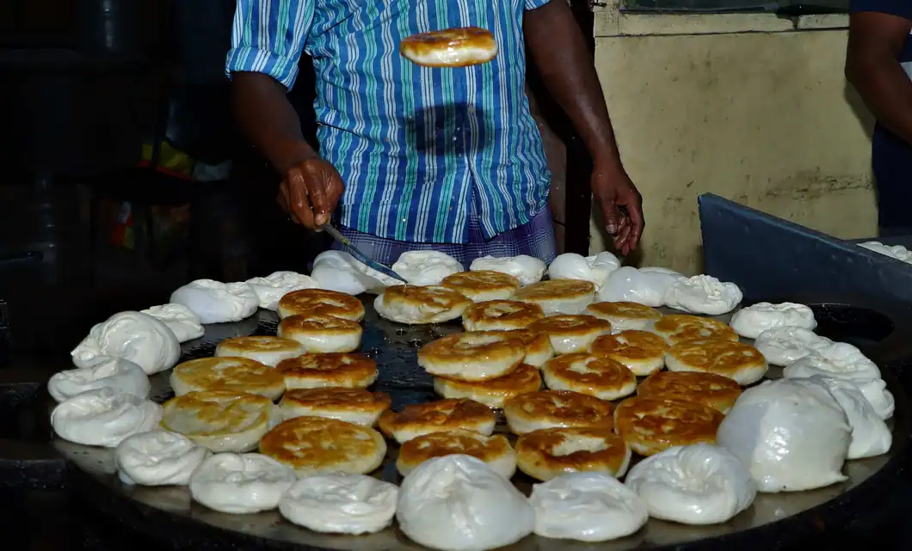

BUN PAROTA!
Bun parota, also known as bun paratha, is a type of Indian flatbread that is popular in South India, particularly in Kerala. It is made from all-purpose flour, sugar, yeast, milk, and egg. The dough is prepared by mixing these ingredients and allowing it to ferment for a few hours.
After fermentation, small balls of dough are rolled out into thin circles and then folded multiple times to create layers. These layers give the bun parota its characteristic flakiness and texture. The rolled-out dough is then cooked on a hot griddle with ghee or oil until it is golden brown and cooked through.
Bun parota is often served with curry dishes or eaten on its own as a snack. It's known for its soft, layered texture and rich flavor from the ghee or oil used in cooking.

INGREDIENTS:
- 4 cup of all-purpose flour (maida)
- 2 cup of sugar
- 1 cup of milk
- 2 table spoon of yeast
- 4 eggs
- 5 pinch salt
- 100ml ghee or oil
- 4 cup of water
DIRECTIONS:
- Prepare the Dough: In a mixing bowl, combine 2 cups of all-purpose flour, 1 teaspoon of sugar, 1/2 teaspoon of salt, and 2 tablespoons of oil. Gradually add water as needed and knead the mixture into a soft, smooth dough. Let it rest for about 30 minutes, covered with a damp cloth
- Divide and Shape: After the dough has rested, divide it into small lemon-sized balls. Roll each ball into a thin disc using a rolling pin and some flour for dusting.
- Layer and Fold: Take one rolled disc and brush it lightly with oil or ghee. Place another disc on top and repeat the process until you have a stack of 4-5 discs. This layering helps create the flaky texture of the parotta.
- Roll and Coil: Roll the stack of discs into a tight cylinder. Then, coil the cylinder into a round bun shape. Press gently to flatten it slightly.
- Cooking: Heat a griddle or tawa over medium-high heat. Place the bun parotta on the griddle and cook until golden brown spots appear on one side. Flip it over and cook the other side until golden brown and cooked through.
- Serve: Remove the bun parotta from the griddle and serve hot with your favorite curry, chutney, or side dish.
TIPS:
Use Good Quality Flour: Opt for high-quality all-purpose flour (maida) for the best results. The quality of the flour greatly affects the texture of the parotta.
Knead the Dough Well: Proper kneading is key to achieving a soft and pliable dough. Knead the dough until it becomes smooth and elastic. This helps develop gluten, giving the parottas their characteristic texture.
return to home